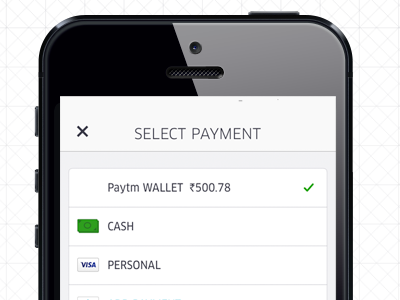
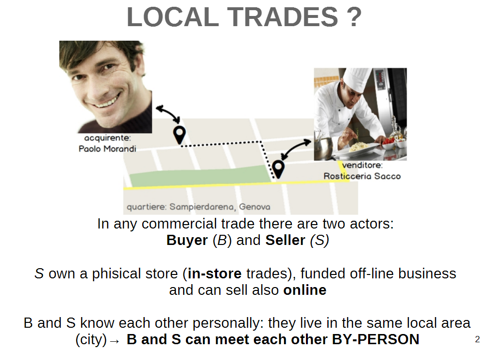
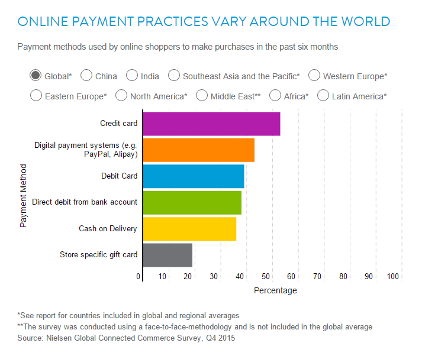
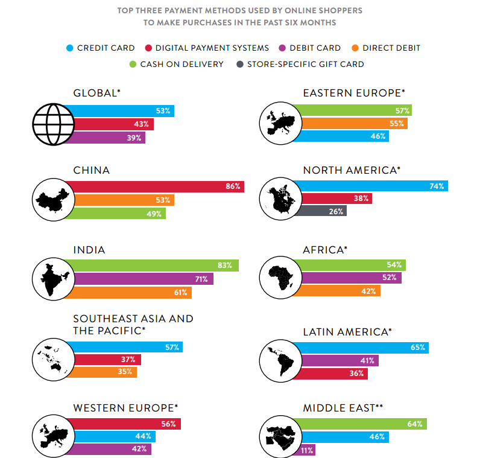
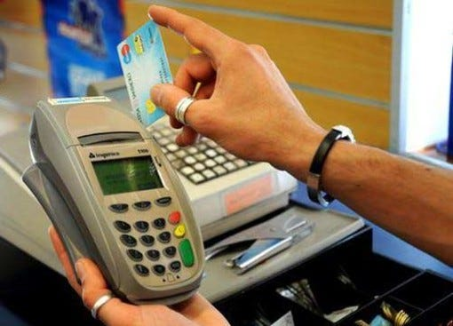
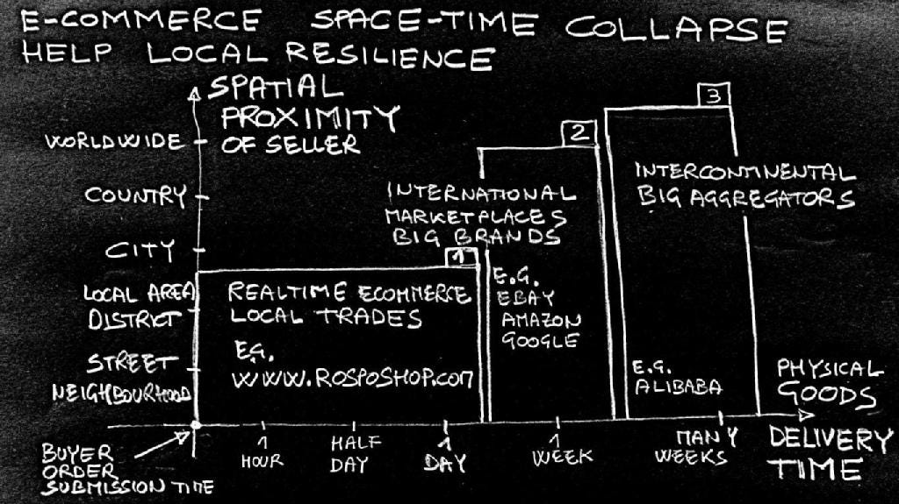
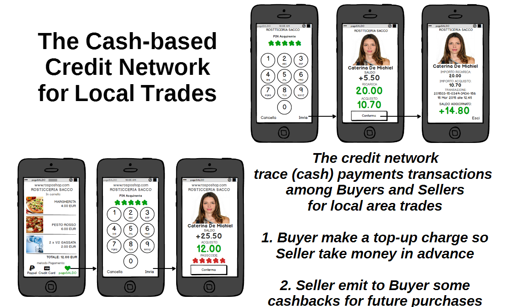
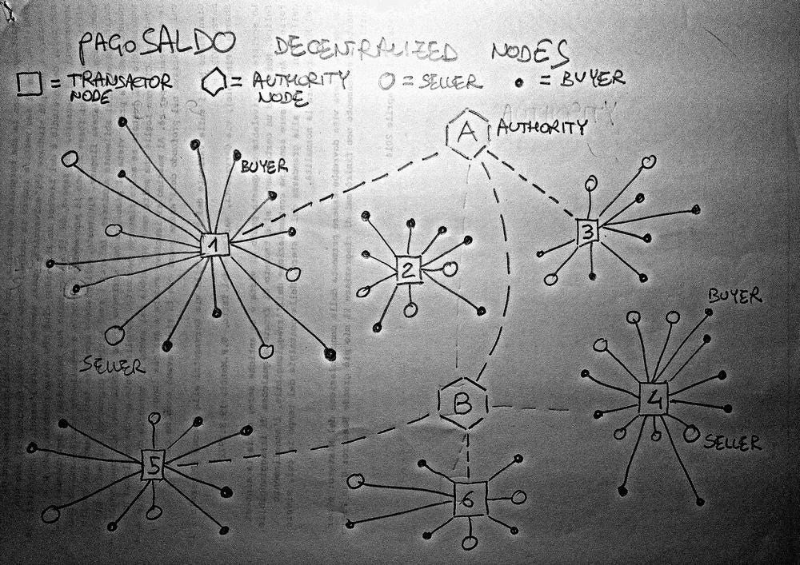

Cash-based e-Commerce for Local Trades ?
Alcune mie riflessioni controcorrente sui sistemi di pagamento online ed una possibile via di crescita per l’e-commerce (di prossimità) nei paesi poveri (tra i quali forse l’Italia).

Lo spunto di riflessione nasce dalla lettura dell’articolo di Giancarlo Donadio: Una ricerca rivela come paghiamo quello che compriamo online.
L’articolo sintetizza una analisi approfondita pubblicata recentemente da Nielsen: GLOBAL CONNECTED COMMERCE, sui sistemi di pagamento online ed il cui sottotitolo pone un interrogativo molto stimolante:
Is e-tail therapy the new retail therapy ?
Le statistiche riportate nel rapporto Nielsen evidenziano il fatto che sul pianeta terra, nell’ambito delle transazioni online, i pagamenti non sono solo quelli con le carte di credito ma sono una realtà anche pagamenti in moneta contante (#cashOnDelivery).
Cash eCommerce = eCommerce + cashOnDelivery
Contraddizione in termini ? Sorpresi ? No. E’ possibile coniugare il commercio elettronico di prodotti e servizi, con sistemi di pagamento basati sul pagamento in contanti alla consegna, e più in generale con meccanismi di pagamento agnostici rispetto alla moneta, indipendenti dai meccanismi prepagati con carte di credito (issuers: Mastercard, Visa, etc. etc. ) o intermediari bancari (esempi: Paypal, Alipay, etc.).
Un meccanismo di pagamento alla consegna in contanti è in particolare possibile ed “economico” nell’amibito del proximity e-commerce, ovvero di e-commerce (ONLINE) dove acquirente e venditore vivono, operano nello stesso territorio (ad esempio nello stesso quartiere, nella stessa città).

Prima di entrare nel quasi inesplorato mondo del proximity e-commerce, facciamo alcune osservazioni sui dati globali di Nielsen; nella statistica qui sotto riportata, che riassume i metodi di pagamento on-line, vediamo che sono predominanti carte di credito e digital payment systems (nei paesi occidentali prevalentemente Paypal, ed in Cina Alipay, etc.).

Dal grafico sopra, che riassume valori globali, probabilmente facendo una media worldwide, vediamo che i pagamenti direct debit from bank account, ovvero quelli che in Italia chiamiamo bonifici bancari real-time o prelevamenti-IBAN, rappresentano una percentuale cospicua. Penultimi in classifica, ma presenti in percentuale comunque sostanziosa, ci sono i pagamenti alla consegna in contanti (#cashOnDelivery) e l’utilizzo di gift cards, in Italia li chiamiamo coupon, ed io preferisco la declinazione cashback, emessi da specifici venditori.
Vediamo il dettaglio per aree geografiche:

I pagamenti in contanti alla consegna (ricordo che la statistica si riferisce ad acquisti on-line), sono prevalenti in buona parte dei “paesi emergenti”: India, Africa, Medio Oriente, Europa dell’Est. La mia breve conclusione è quindi che:
Nei paesi “poveri” si fa e-commerce, ma il sistema di pagamento prevalente è quello alla consegna con moneta contante (#cashOnDelivery)!
Giancarlo Donadio interpreta la spiegazione di Patrick Dodd di Nielsen sul fenomeno:
Eppure il contante tiene
… I motivi sono essenzialmente due: la poca diffusione di carta di credito e bancomat. E la scarsa fiducia nei confronti dei sistemi di pagamento online: «Nessun sistema di pagamento funziona ovunque. I retailer che vogliono espandersi all’estero devono capire i mercati locali e adattarsi di conseguenza. Aumentare il numero delle opzioni di pagamento contribuisce a migliorare le conversioni degli utenti in clienti. Per farlo i retailer devono aumentare la fiducia dei consumatori, informarli sulle misure che prendono per garantire proteggere le loro informazioni e offrire anche una migliore esperienza di acquisto di quella del contante. Con incentivi, per esempio, o sconti per chi preferisce pagare online» spiega Patrick Dodd.
Vero! ma ci sono secondo me due punti focali che non sono menzionati nell’analisi di Nielsen; li elenco qui sotto:
Carte di credito e pagamenti digital costano troppo (per i micro-merchants)
Abbiamo poco coraggio, in Italia e non solo, di dirci che pressochè ogni servizio di pagamento digitale che permetta ad un merchant di ricevere denaro in transazioni di e-commerce, quindi prevalentemente con carte di credito o attraverso payment service provider Paypal-like, ha costi notevoli per il venditore on-line. I costi di pagamento diventano addirittura un deterrente per la microimpresa (per esempio per le piccole attività in-store, che stanno valutando la possibilità di estendere il commercio off-line a quello on-line).
Nota: i payment service providers come Paypal e molti cloni di recente successo, realizzano conti bancari intermedi tra acquirenti e venditori, con non trascurabili costi per i merchants, fino al 3.5% di commissione per transazione, senza contare i costi di movimentazione tra conti: il denaro di una vendita non va mica direttamente sul conto bancario del merchant, ma rimane nel conto del payment service provider, per un qualche periodo o fino a che non viene movimentato dal merchant). Brutta cosa per i negozianti che sono abituati a contare i soldi dell’incasso a fine giornata.
Il problema del costo dell’intermediazione di pagamento non è affatto secondario per la piccola/piccolissima impresa, e mi riferisco proprio a quel retail che si vorrebbe diventasse e-tail, riprendendo ancora la molto centrata domanda di Nielsen:
Is e-tail therapy the new retail therapy ?
Con il termine retail mi riferisco non tanto alla GDO (il termine italico: Grande Distribuzione Organizzata mi ha sempre ricordato il Ministero dell’Amore), ovvero alle grandi catene di supermercati (alimentari), ma piuttosto penso al piccolo commercio al dettaglio, ai negozi di quartiere, all’artigianato, ai servizi della vita quotidiana reale (la parrucchiera, l’idraulico, etc. etc.).
Banalizzando: ce lo vedete felice un pescivendolo che per prendere i soldi di un acquisto fatto online su suo ipotetico sito web, deve occuparsi della doppia movimentazione bancaria per avere i soldi (che comunque non ha ancora in tasca a fine giornata) ? Io non ce lo vedo.
Spostando poi solo un attimo il discorso dai pagamenti online a quelli POS , il problema delle attività commerciali in Italia attualmente rimane quello di un costo troppo elevato dei POS (vedi la diatriba, ora temporaneamente sopita, dei mesi scorsi pro e contro decreti legge su micropagamenti);

Riporto solamente una analisi fatta da corriere.it che evidenzia di che costi annuali stiamo parlando, ma chiudo subito parentesi (la questione micropagamenti e POS merita approfondimento a parte, che farò in prossimo articolo):
Proximity e-commerce ? Local Trades ?
L’analisi di Nielsen sfiora appena un secondo punto nevralgico dell’e-commerce: la distanza fisica tra venditore ed acquirente, “costa”.
Per anni ci siamo abituati all’e-commerce dei grandi player internazionali, dando per scontate spedizioni postali per la consegna dei prodotti e considerando inevitabili i pagamenti prepagati, via payment service provider (Nielsen li chiama pagamenti digital per semplificare) o via credit card, ma rimane ancora poco esplorato lo spazio enorme di quello che potremmo chiamare proximity e-commerce.

Nel caso di e-commerce in cui acquirente e venditore vivano nello stesso quartiere, nella stessa città, diventa possibile ed economico per il venditore evitare il passaggio attraverso i payment service provider online, ed invece usare il pagamento alla consegna con moneta cash! Facile, costo zero.
Per non parlare dei costi di trasporto e logistica che nel caso di spedizioni postali (nazionali od internazionali) sono enormi anche per i big player, ma che si riducono enormemente nel caso di compravendita su territorio locale (interurbano per esempio). L’analisi degli svantaggi dei costi di trasporto e per contro i benefici di un e-commerce con consegna in tempo reale richiederebbe un approfondimento off-topic qui e che tratterò prossimamente.
ROSPO — Snap Commerce for Local Trades
C’è un caso d’uso in Italia che realizza #cashOnDelivery e che non sorprende certo per novità: è la consegna delle pizze a casa! In questo caso ci pare normale pagare in contanti le pizze al fattorino che ce le porta al nostro domicilio. Tutto questo non potrebbe funzionare altrettanto bene per molte altre attività commerciali di prossimità ? Io dico di sì.
Piccolo advertising: il mio progetto embrionale www.rosposhop.com (Snap Commerce for Local Trades) si propone come ecommerce di prossimità, estendendo l’ambito; non solo food, ma qualsiasi prodotto o servizio. Attualmente sto lavorando alla implementazione del servizio su piattaforme di messagistica istantanea e cerco azienda o ente interessato a sviluppo prototipo.
Uber ora accetta anche pagamenti in contanti
Ok, ho citato un progetto personale e nemmeno in produzione quindi non sono troppo credibile, ma allora cito un’ azienda che non ha bisogno di presentazioni ed è generalmente osannata dagli “innovatori digitali” italici: Uber!
Il già menzionato Giancarlo Donadio ha firmato recentemente un articolo molto interessante: Uber in crisi di identità: ora accetta anche pagamenti in contanti, mettendoci a conoscenza di una recente strategia di Uber in fase sperimentale in India (uno dei paesi in cui il pagamento in contanti è prevalente anche nelle transazioni on-line, da analisi Nielsen) ed indovinate un pò ?! Uber sta sperimentando in India (ed in altri paesi del “terzo mondo” tra i quali le Filippine, il Kenia, etc.) la possibilità di pagamento in contanti da parte degli utenti del servizio.
Come funziona ? Gli autisti gestiscono lo scambio di denaro opzionalmente anche CASH con i clienti e ad ogni corsa effettuata Uber effettua prelevamento automatico della propria commissione, direttamente dal conto corrente dell’autista. In Uber non sono fessi: i pagamenti cash non sono un ripensare il payment workflow digitale ma semplicemente estendere il loro mercato (con pagamenti cash nei paesi in cui la maggior parte degli utenti usa i contanti per ogni cosa, pagamenti digitali nei paesi “ricchi”, nord America, Europa, etc.).
A Cash-based Credit Network for Local Trades
Uno dei miei progetti collaterali è www.pagosaldo.com, un sistema di tracciamento delle transazioni di pagamento fatte con moneta contante, sia in contesti in-store sia online.

pagoSALDO è un sistema basato su microconto P2P tra acquirente e venditore. Il conto è indipendente da tipo di moneta di pagamento (cashless o cash) e permette pagamenti prepagati o postpagati, online ed in-store, e l’ho pensato specificamente per lo scambio di moneta contante, con tracciamento automatico delle transazioni di pagamento (#cash) e fidelizzazione del cliente con un meccanismo di #cashback.
Customer-Seller TRUST in the face-to-face proximity commerce
Il vero vantaggio di un rapporto commerciale (in-store/off-line oppure online) in cui acquirente e venditore si conoscono di persona e che concludono transazioni commerciali con un incontro personale, è la fiducia (#trust) del rapporto umano che si instaura. E’ questa fiducia che permette la gestione di un “conto aperto” tra le due parti. Ed è questo il vero motore di una rinnovata economia (digitale) che si basa sui pagamenti cash.
P.S. Sono alla ricerca di un’azienda od altro ente, interessato a realizzare il progetto (riporto il mio contatto in fondo all’articolo).
Conclusioni e visioni
Alcune recenti indagini di mercato, come quella recente di Cuponation, prevedono un crollo complessivo dell’e-commerce in Italia nel 2016. Non sono buone notizie: c’è una situazione piuttosto stagnante (+16%) nei settori ormai tradizionali e consolidati (fashion, viaggi, etc.) ma è nei possibili settori emergenti/innovativi che non è prevista crescita!
Il motivo non è solo quello di una grave situazione economica, e non è nemmeno utile ripeterci la solita tiritera della mancanza di una digitalizzazione (visto che 6/7 italiani su 10 hanno un telefono mobile in tasca, pure “attaccato ad internet”).
A mio avviso uno dei fattori importanti che frena una ripresa nell’e-commerce è il costo elevato delle transazioni di pagamento online, che ad oggi sono realizzati da big player, aziende di profitto (issuers, banche, internet service providers).
D’altro canto, sistemi di tracciamento del contante con piattaforme come pagoSALDO possono forse coaudiuvare una ripresa dell’e-commerce, ed il Governo Italiano potrebbe farsi protagonista di proposte davvero innovative di servizi realizzati anche dalla pubblica amministrazione. Perchè nò, Poste Italiane, malgrado tutto, potrebbe essere l’ente “attuatore”; per esempio nello schema qui sotto ipotizzo che pagoSALDO possa essere realizzato in un modello open-business dove le transazioni di pagamento avvengano in un sorta di peer-to-peer con nodi transactor che comunicano con nodi authority (per il tracciamento):

Fantascienza naif pensare che lo Stato diventi autority in una mediazione nei pagamenti commerciali ? Forse sì, è utopia (o distopia, qualcuno direbbe), ma sono convinto del titolo di questo scritto:
Cash-based e-Commerce for Local Trades
Il commercio elettronico può essere incentivato da transazioni di pagamento basate sul cash, ovvero sistemi #cashOnDelivery come ROSPOshop, o #cashAtServiceEnd come la sperimentazione di Uber in India, dove l’utente paga in contanti al tassista a fine corsa (così come è sempre stato).
Potrebbe forse essere Poste Italiane il catalizzatore di un sistema di pagamento (e tracciamento) delle transazioni di pagamento basate anche sul contante, o potrebbe essere un azienda profit, banca o consorzio di banche, a realizzare pagoSALDO ? Comunque sia:
Affinchè ci sia una inversione di rotta dell’attuale crisi dell’ecommerce, deve SCENDERE il “costo vero” delle transazioni di pagamento, per i buyers e per i sellers!
Se ne devono fare anche una ragione le banche italiane, che dovrebbero incominciare a fornire gratuitamente i sistemi di bonifico online (attualmente per esempio alcune banche supportano il sistema Jiffy per transazioni tra privati (al momento non mi risulta che nessuna banca utili Jiffi per transazioni commerciali), con costi però non trascurabili.
Per esempio Carige, banca di cui sono correntista, chiede 25 centesimi di euro per transazione; io ritengo che questo servizio dovrebbe invece essere gratuito (perlomeno per le transazioni P2P tra privati, ma anzi dovrebbe essere gratuito per ogni sorta di transazione commerciale che riporta soldi NELLA banca).
Le banche italiane dovrebbero fornire GRATUITAMENTE servizi di payment provider a TUTTI i correntisti, sia per transazioni private-to-private, sia per transazioni business!
Una interessante innovazione che le banche potrebbero proporre ai clienti correntisti è la possibilità di fruire di chatbot apps per conversational payments (#convpay) cioè la possibilità di fare e ricevere pagamenti su instant messanging mobile apps . Lorsignori banchieri (o bancari) mi conttatino all’uopo per il coordinamento dell’implementazione :-)
Io così la vedo, altrimenti nel 2017
non saremo in grado di osservare quella crescita dell’e-commerce che sulla base di molti fattori sarebbe invece lecito attendersi.
Miglior business per tutti!
Giorgio Robino, 28 Febbraio 2016
Letture di approfondimento
- Una ricerca rivela come paghiamo quello che compriamo online
- Uber in crisi di identità: ora accetta anche pagamenti in contanti
- GLOBAL CONNECTED COMMERCE (Nielsen, January 2016)
- THE FUTURE OF GROCERY (Nielsen, April 2015)
- Patrick Dodd (Nielsen): «La personalizzazione è il futuro del retail»
- ROSPO — white paper (in Italiano)
- pagoSALDO — The Cash-based Credit Network for Local Trades
About me
- email: giorgio.robino@gmail.com
- news: @solyarisoftware
Originally published on Medium.